There is evidence of an extraterrestrial presence all around us. All we need to do is look at what we see with new eyes. Indeed, the earth has been visited many, many times over huge spans of time; hundreds of millions of years. We have evidence of buildings, constructions, debris, interaction(s), and ruins.
Today, I would like to concentrate on the discovery of the remains of a fuselage embedded deep within the sandstone rock of Victoria Falls.
Of course, the statists don’t consider this anything other than naturally formed rocks. After all, the argument goes, humans are the most advanced species in the entire universe. It has always been that way, and it will always be that way. Anyone who thinks differently is just a simpleton.
Don’t ya know…
More reasonable people suspend judgement. They recognize that a mystery is exactly that; it is a mystery. They understand that nothing ever fits “nicely” in a set easy-to-label box. They understand that there are things older than us, that there are mysteries that are suggestive of technologies beyond our comprehension. To them, rather than labeling something “solved” with a nice “pat” answer, they label it as an OOPART and hope that someday, someone will be able to illuminate the truth behind the objects in question.
Enter Metallicman…
Here we get to shine some clarity on this mystery, based on other things that are understood within MAJestic.
Crash Debris
This relic is what I like to refer to as “crash debris” or if not precisely vehicular in nature, then “ruins in isolation” that I am sure had an interesting history.
It is considered an OOPART; an “out of place artifact” simply because it is “inconceivable” that anything was able to design, fabricate, assemble, train, fly, and crash a vehicle hundreds of millions of years before proto-proto-humans ever set foot on the earth. Humans have only been in possession of a written language for 6,000 years. While there have been various evolutionary stages of humans, it’s contemporaneously understood that the most significant contributions of humans has only been within the last 2,000 years.
Humans are, the statist belief goes, the smartest and most capable beings in the entirety of the universe. Anything that suggest otherwise is inconceivable.
It is simply, and in every other way, inconceivable.
Some History
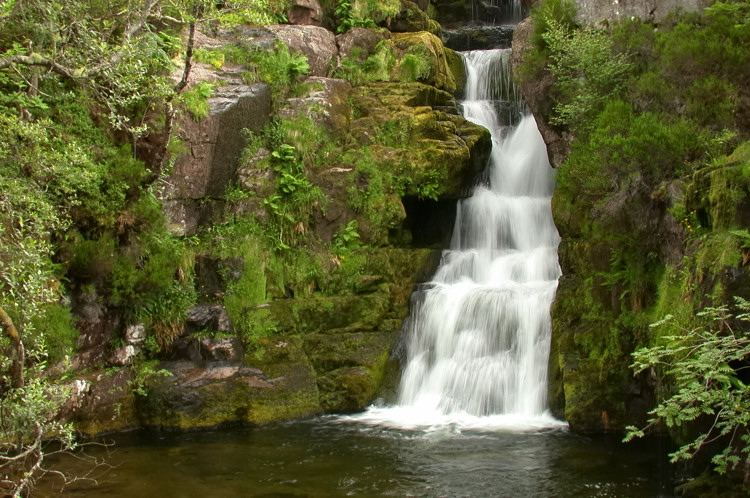
On June 13, 1880, a reporter for the Inverness Courier named Walter Carruthers was vacationing near Loch Maree and Victoria Falls, in Scotland. We can well imagine that he went on various walks and climbs. The area is very scenic and is a great place to walk, smell the air and explore. Being an amateur rock hunter (like my brother) he decided to explore the geology of the area.
During the day he went into the surrounding countryside and collected stones of personal interest to him. After a while he went towards waterfall in the area; Victoria Falls. Between 300 and 400 yards above Victoria Falls (the part were the water tumbled down the cliff), and immediately beside the last of the three lesser falls on the west side of the stream, Carruthers noticed peculiar impressions in the rock there. These impressions were obviously not natural. Indeed, and most perplexing; the rock was a 16 x 16-foot exposed surface of Torridon Red Sandstone, dated to the Cambrian age.
In geology, the term Torridonian is the informal name for the Torridonian Supergroup, a series of Mesoproterozoic to Neoproterozoic arenaceous and argillaceous sedimentary rocks, which occur extensively in the Northwest Highlands of Scotland.
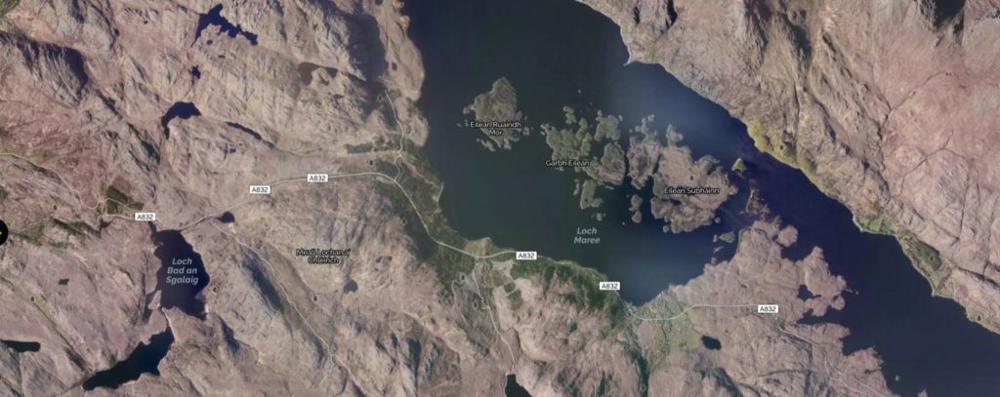
The Discovery
The impressions consisted of two continuous flat bands side by side. They were about 1.375 inches wide and about 0.25 inch deep. They ran in a unnaturally straight line through the flat layers of sandstone in situ. This was perfectly distinct for 16 feet, disappearing on the west side under the superimposed rock, and broken only where portions of the sandstone had been weathered out.
A few weeks later the curious “bands” were also observed by a colleague of Carruthers; Mr. William Jolly. He wanted an expert opinion from an authority in the region. Mr. William Jolly was exactly that. He was Her Majesty’s Inspector of Schools for the region. He was specifically invited to observe the curious feature and offer his opinions.
Carruthers had thought the impressions to have been the creation of some highly unusual living creature, but Jolly recorded that;
"the continuous even breadth and square section of the bands would seem to render this impossible."
Jolly further noted,
"The double band resembles nothing more nearly than the hollow impression that would be left by double bars of iron placed closely together."
Iron Bars Placed Close Together
Clearly, the expert at the time, Mr. Jolly felt that this was exactly what it appeared to be. He believed that the evidence was strongly suggestive of double bars of iron placed closely together in parallel.
Jolly’s observation was corroborated years later when micro-specks of iron oxide were taken from the impression cavities.
So, low and behold, the forms were actually made by some form of iron. Now, the reader should note that iron is not naturally pure. it comes from iron ore. Thus, the irons bars were [1] smelted from iron ore, and [2] formed into bars, and [3] obviously alloyed with something to make them useful, that were [4] placed evenly and exactly. Further, somehow, they [5] managed to find themselves embedded within rock and stone that is (around) 640 million years old.
Since it is inconceivable that this could have been smelted, fabricated, assembled, arranged, placed long before proto-proto-humans ever walked the earth, other solutions must be presented. Always a cautious man, Mr. Jolly offered some ideas on what they could actually be.
Alternative Speculations
The superintendent thought, however, that perhaps the iron bands had at one time been inserted into the rock, “to clasp some structure to it”. It seems like a reasonable explanation. Metal, particuliarly steels, are often embedded within stone and rock to mount other structures to them. We see this all over the world.
Unfortunately, other findings discount this.
- First, the bands occur high above the Falls in an almost totally inaccessible place, where a “structure” would serve little purpose.
- Second, the bands are only one-quarter of an inch deep, so that anything “clasped” to them would not hold for long.
- Third, parallel on either side of each band are tin-like ripple marks in the sandstone, indicating the presence of the original iron bands had caused turbulence patterns in the sand during the time the sand had been laid down by water, and before it had turned to stone.
- Fourth, the sandstone in the impressions show tiny striations which are really the preserved grain marks of the iron – again, indicating the metal had been impressed in the primordial sand, before solidification took place.
- And finally, fifth, one portion of one of the bands bends back into the subsurface, and careful excavation revealed the presence of iron oxide totally encased by the surrounding sandstone. Thus the (partially complete) actual original iron band was actually found inside the rock where the band bent inward.
Other Evidence
The expert, Mr. Jolly, also found other band impressions in the same locality:
- There is a third band that runs alongside the other two, but is much less distinct and is not continuous.
- Two more lines, about 2 feet lower down on the rock surface, are only 7 feet long, and two more are higher up, running 3 feet long.
- Jolly also saw still more bands on an outcropping of the same sandstone on the other side of the stream, again parallel to one another – one 3 feet, another 6 feet.
- He also found smaller portions of several others nearby.
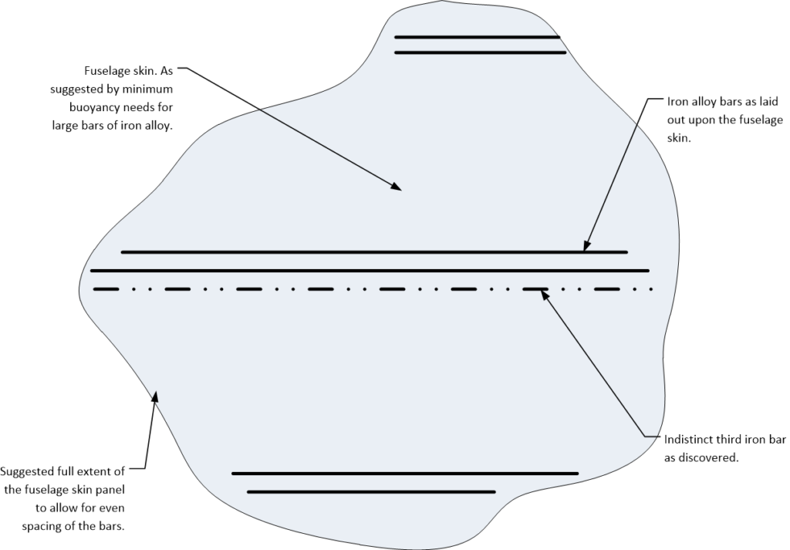
Suggested Layout
All of this suggests a number of broken sections of panel with supporting iron alloy bands evenly spaced. The panel had apparently broken up in numerous places and the parts all lay near each other in disarray. Upon the corrosive activity of time, the panel disappeared, leaving the supporting rib members to tell the story of what once must have been the side of a vehicle or wall panel of some sort.
What other purposes these iron bands served, we can only guess.
What we do know, however, is that all the bands were very uniform in width and thickness, with squared edges, and the grain marks they left indicate they were rolled and cut – all of which points to precision manufacturing by machine production.
There are numerous constructions that employ square cross sectional tubing. These include such things as fences, specialized mechanical and processing equipment, and vehicle walls (marine and aviation). From an engineering point of view, there are many structural reasons for incorporating long transverse bars to strengthen walls in vehicles. That is why they are used in both marine ships and aircraft (and spacecraft) contemporaneously.
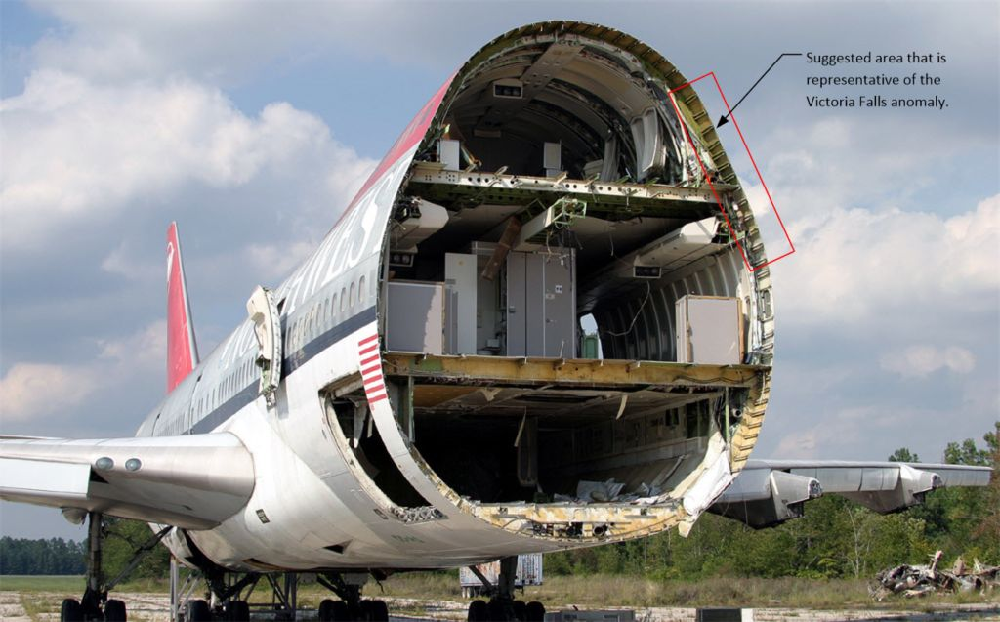
By reading this report, I have come to imagine what the area must have looked like when the iron fabrications were still intact. I have come to the conclusion that numerous structures were lying on the sandy ground at that time. They all possessed long frames constructed of steel (and iron alloy containing small amounts of carbon by percentage).
These constructions, whether they were part of a construction site, or portion of wreckage, is unknown. But clearly, the impressions were made by the heaviest items deposited in the sand at that time. Given the possible location of the geology, it seems to me that the anomalous items found are but a sandy impression of washed up flotsam on an ancient Cambrian beach.
As such, since Iron or steel is heavy, the impression is supportive of a large panel or bulkhead with metal reinforced ribbing. For that is the only way the metal bars could have been washed up on to the beach. It would need a large surface area to keep the heavy metal rods buoyant. The panel itself has long since disappeared, but the heavy ribbing has survived in the impressions in the sand.
Formation of Sandstone
"Sandstone forms over the course of centuries, as deposits of sand accumulate in rivers, lakes or on the ocean floor, and the sand blends with calcite or quarts and then undergoes compression. After enough time goes by, the pressure pushes all of these elements together to create sandstone. Because not all sand is identical but instead comes in a variety of colors and grain textures, each formation has a unique appearance." -How is Sandstone Formed
The forms in question, the rocks of Victoria Falls, were formed by the buildup of beach sand over many millions of years. As things were washed up by the ocean currents of that time, they became encased within the sand, and eventually buried within it.
Over time the metals rusted away leaving only the impressions made by the thickest and heaviest parts. The cavities made by thin wall sections would have collapsed many millions of years ago and there would be no trace of them today.
We do know that when the debris settled in place, that water splashed upon the surfaces of it. The impressions of the erosion and paths of water were at once clearly evident all around the impressions. This tells us that the debris was influenced by the water borne movement of sand on a shore.
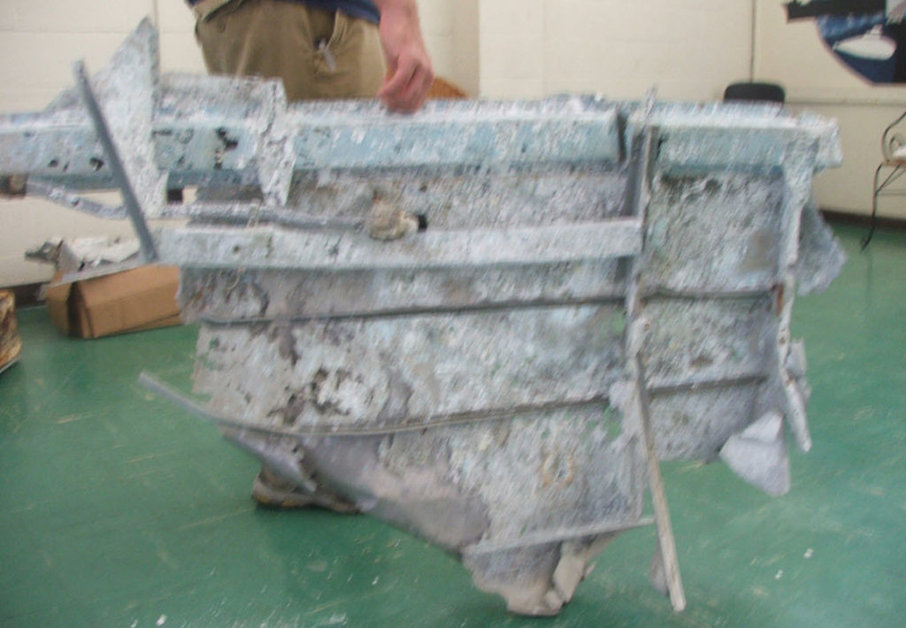
What the Sandstone can tell us
Like any good forensic detective, we can identify the environment of the rocks to tell us a little about the history of the objects in question. The following insights are from ThoughtCo…
- The sand grains in sandstone give information about the past:
The presence of feldspar and lithic grains means that the sediment is close to the mountains where it arose. Detailed studies of sandstone give insight into its provenance—the kind of countryside that produced the sand. The degree to which the grains are rounded is a sign of how far they were transported. A frosted surface is generally a sign that sand was transported by wind—that, in turn, means a sandy desert setting.
- Various features in sandstone are signs of the past environment:
Ripples can indicate the local water currents or wind directions. Load structures, sole marks, rip-up clasts and similar features are fossil footprints of ancient currents. Liesegang bands are signs of chemical action after burial of the sand.
- The layers, or bedding, in sandstone are also signs of the past environment:
Turbidite sequences point to a marine setting. Crossbedding (truncated, tilted sandstone layering) is a rich source of information on currents. Interbeds of shale or conglomerate may indicate episodes of different climate.
Using this information, we can infer that the impressions were made by some object that was washed up on a sandy shore, that later became hard sandstone. We can tell that the object displaced the movement of the water in such a way that the wave and water washed in and around the heavier sections of the object. This gives us the impression that the heavier bars were attached to a lighter section that is no longer obvious to us.
To understand how the sand at a beach would eventually turn into a rocky outcrop and a water fall, we need to take a look at the time when that rock was formed.
The Cambrian Age
"The Ediacaran and Cambrian periods witnessed a phase of morphological innovation in animal evolution unrivaled in metazoan history, yet the proximate causes of this body plan revolution remain decidedly murky. The grand puzzle of the Cambrian explosion surely must rank as one of the most important outstanding mysteries in evolutionary biology. Evidence of early representatives of all the major animal phyla first appear abruptly in the Cambrian (starting 542 million years ago). This spectacular morphological diversity contrasts strongly with Precambrian deposits, which have yielded a sparse fossil record with small, morphologically ambiguous trace fossils or the enigmatic but elegant creatures of the Ediacaran fauna. Following the Cambrian, despite a rich fossil record that documents impressive morphological diversification among animals, no new body plans have been revealed, leaving the Cambrian as the apparent crucible of metazoan body plan innovation." -Creation / Evolution Headlines
The rocks and strata are highly suggestive that the remains date from the Cambrian period. That is a very long time ago. In fact, it is around 541–485.4 million years ago. (Let’s simply refer to the date as 540 million years ago.) At that time, the earth was mostly ocean. The continents were, as we can best tell, centered around the south pole. Leaving a comfortable bulk of the world covered by ocean.
The earth was, at that time, a ocean world with some notable mini-continents.

It was a mild time. The overall world weather was rather mild. There wasn’t any glaciation. The various landmasses present at that time were scattered about. (This all was a result of the fragmentation of the super-continent Rodinia that had existed in the late Proterozoic.)
There were a number of (more or less) significant landmasses. Though, most of the of the continents were joined together to form the super-continent Gondwana

Prior to the Cambrian, the earth was not at all like we would assume it to be. It consisted of a very lively aquatic biosphere, and a terribly barren terrestrial land biosphere. The land masses were all barren and devoid of most life.
There were no animals. There were no insects. There were no flowers. There were no trees, nor grasses. There might have been a moss or two about, but that was about it. The differences between the two biospheres were too extreme. Nothing in the aquatic biosphere could breach the shore and make it’s way onto land.
Then suddenly something happened…
The Cambrian Explosion
This period of time; the Cambrian Period, was a very important point in the history of life on Earth. It was notable in that it was the time when animals first began to appear. This event is sometimes called the “Cambrian Explosion,” because of the relatively short time that the animals began to appear.
It was around a half a billion years ago. (I would say that 540 million years is pretty close to half a billion years.) Now, this is a very, very long time ago.
Prior to this time, most life came from the seas and oceans. There, the life grew and flourished. However it took some time for the life to leave the shores. At that time the oceans were teeming with life. There were jellyfish, marine creatures of all shapes and sizes and fishes. Yet the land was barren except for some life near the coasts.
Then SUDDENLY, out of the blue, life began to appear. It wasn’t that it started to appear from zero to full and dense populations. No. Instead, when we refer to life appearing; we actually are referring to “life appearing on land”.
You see, up until the Cambrian period, the earth consisted of two completely separate biospheres. There was the [1] aquatic biosphere, and there was [2] the land biosphere. They were independent and distinct. Fish did not walk on the land, no shellfish climbed up on the hot rocks near the water. No life was on the land.
The [1] aquatic biosphere was relatively easy to start early life within. It was a crucible. We know, now today, that when you have water and heat, you can generally generate microorganisms. Over time they can increase in number and diversify.
The [2] land biosphere was something different. There just wasn’t any kind of crucible or nursery for the growth or evolution of land life. The only way that this could occur was through transport from the [1] aquatic biosphere. That could not happen.
There was no mechanism to ignite life on the barren soil of the [2] land biosphere.
A Need for Tides
The time immediately before the Cambrian period is suggestive of a period when there just wasn’t any moon present. The earth sat alone without any large orbiting bodies. As a result, there were no tides and no waves. The ocean was a large still body. The only movement on the water was through the sea and ocean currents and the climate at the time.
Tides are created when a large planetary body is near another planetary body. This can be like the moon orbiting the earth, or more commonly, like a planet in close orbit around a red dwarf or class K star. The gravitation of the nearby body causes the liquid on the neighboring planet to move. This in turn, causes tides that ebb and flow. It causes periods of wet and dry surfaces where creatures from the [1] aquatic biosphere can evolve to move to a [2] land biosphere. Indeed, large planetary masses are necessary for biological evolution.
Large planetary masses are necessary for biological evolution.

I contend, for many reasons not listed here, that the moon was “placed” in orbit around the earth during the Cambrian. This placement created an environment that was friendly for the evolution and porting of life from the [1] aquatic biosphere to the [2] land biosphere.
- I would suggest any one interested in following this “theory” further, please read my blog post about The Hollow Moon.
- It also explains WHY there was a sudden and rapid “Cambrian Explosion“.
Beginnings of Land-based lifeforms
Indeed, there is strong evidence that numerous softshelled Ediacaran organisms ventured onto land during the Cambrian. In so doing they produced the trace fossils Protichnites and Climactichnites . These trace fossils are not of any specific creature, but rather the tracks made by them when they ventured forth in the sand. These tracks indicated that they had legs, tails, and perhaps some kind of articulated arms or claws.
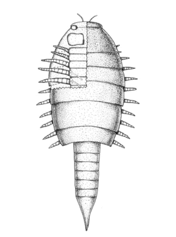
Protichnites is an ichnogenus of trace fossil consisting of the imprints made by the walking activity of certain arthropods. It consists of two rows of tracks and a medial furrow between the two rows. This furrow, which may be broken, set at an angle, and of varying width and depth, is thought to be the result of the tail region contacting the substrate.
Fossil evidence suggests that euthycarcinoids, an extinct group of arthropods, produced at least some of the Protichnites.
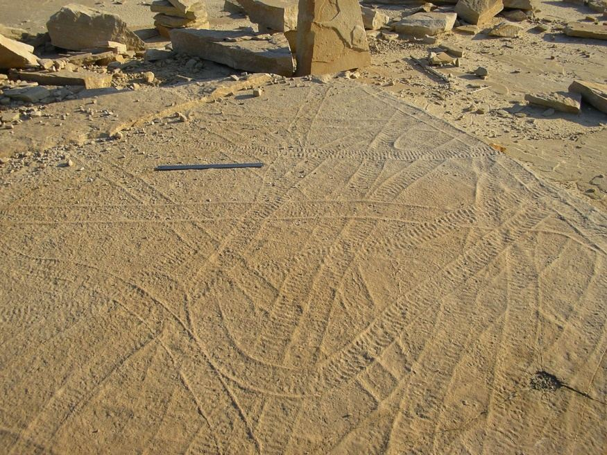
Fossils of the maker of Climactichnites have not been found; however, fossil track-ways (see above) and resting traces suggest a large, slug-like mollusk. Probably with a soft caprice or shape that is not readily mineralized. One should imagine a large (football sized) slug that looked a little like a “potato bug” but without a shell; crawling along the sand with gecko like speed.
Climactichnites is an enigmatic, trace fossil of a slug-like organism, thought to have moved by crawling to on-shore surfaces, or near-shore, or burrowing into the sediment.
I personally like to consider these creatures proto-trilobite creatures.
Life in The Cambrian
At that time, we can well imagine that the world was just beginning to experience the gravitational effects of a nearby moon. The contents began to migrate over time, and the effects of the tides began to result in the movement of sea life onto land. At that time, life began to form near the oceans and the rivers.
The oceans, of course were well populated with life. Reefs, coral, and sea life were in abundance. The first early life on the land masses were just starting. This would include such things as early ferns, mosses and basic plants. Simple land creatures became dominant, of which my personal favorites, the trilobites became abundant.
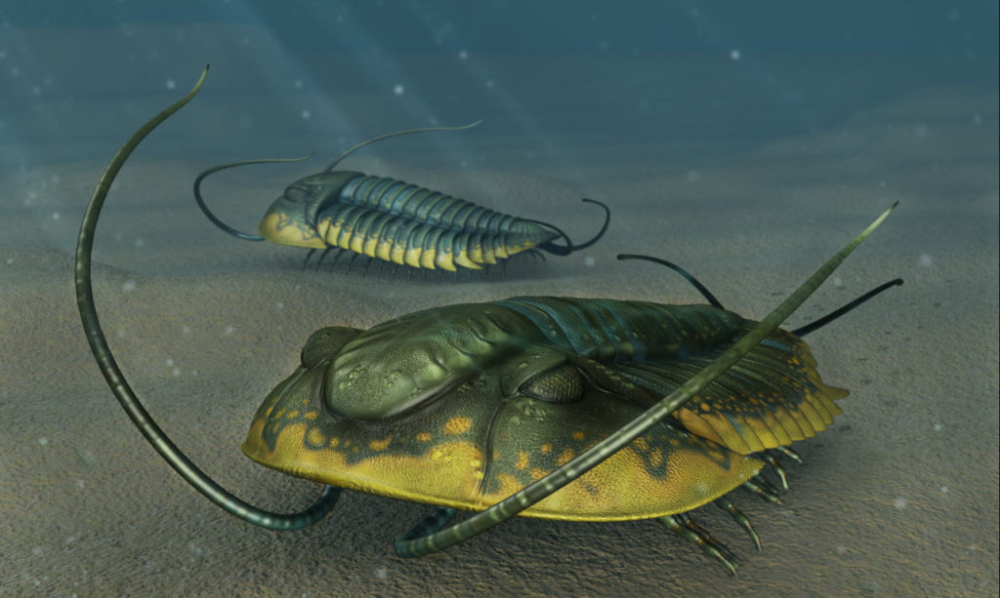
"Trilobites are one of the few major groups of organisms that span themajority of the Paleozoic Era. The greatest numbers of trilobite speciesoccurred during the Cambrian and Ordovician periods, after which trilobiteextinction trends exceeded radiation events." -Trilobite Geological Time Scale
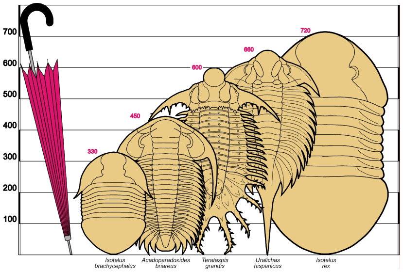
The Presence of the Moon Changed Everything
In contrast to later periods, the Cambrian fauna was somewhat more restricted; indeed free-floating organisms such as jellyfish were actually rare during this time. This was quite unlike the earlier era where there were large swarms of jellyfish, in many sizes (including super-jumbo).
Those earlier life forms that did survive ended up living on or close to the sea floor. Due to catastrophic events that affected the native life forms, mineralizing animals became rarer than in future periods. This was due, in part, to the unfavorable ocean chemistry prevalent at the time.
One of the mysteries of the Cambrian is why there was a jump in the concentration of sulphate in the world's oceans. However, in the Proceedings of the National Academy of Sciences, Canfield and Farquhar attribute the rise in sulphate to the onset of bioturbidity. Or in other words, the burrowing, sluicing, pumping and mixing caused by masses of worms, clams, crustaceans and other animals that began to appear around this time in Earth's history. Personally, I sit amusedly on the sidelines on this argument. I think all the theories are quite interesting, though a bit over my head. I graciously leave the arguments to those scientists that are far better versed to make these determinations than I am.
The Big Picture
With all this being said, let me color in the situation as I understand it to be. Please stick with me as it will sound absolutely outrageous.

If this is too much for your sensibilities, I would suggest you put on some Robin Trower, King Crimson, Yes, Traffic, Gentle Giant, Stone Temple Pilots, or Led Zeppelin. Chill out. Listen to the music for a spell. Break the hold of contemporaneous knowledge and assumptions. Just break it. Realize that we grow and change. Change is good. We need to see where we can from to understand what we are doing were we are today.
Ediacaran Earth
Around 600 million years ago, the earth was a planet that held great promise. This was the Ediacaran period (630 million years ago). The reader must understand that at this time the Earth was a bare and desolate place. Our solar system was mostly free of the huge dust disks and debris field of the earlier 2 to 3 billion years. (Although most of the dust and debris dissipated within the first billion years or so, there were elements of concern for at least a billion years later.)
Our star had matured during that time and became much more stable. But stability is a relative thing; the earth was cooling down. The core and mantle were settling down. Indeed, the surface of the earth was cooling and a thick gaseous envelope of various dusty gasses surrounded it.
Outside the Earth, the other rocky planets were also beginning to cool down and life was just beginning to form in the most unlikely of places. This included the smoggy Mars, and Venus, as well as some of the larger moons of Jupiter (because Jupiter was somewhat closer to the Sun then as it is today).
It showed promise.
Ediacaran Life
Now, the reader should well understand, the earth was a pretty barren world, but the oceans were teaming with all sorts of life. It was a jellyfish world. There was a great diversity of, and sizable numbers of, all sort of soft skinned creatures who roamed the oceans.
The oceans provided the environment that was a common crucible for naturally evolved life.
It was during this time that the (so called) Ediacaran biota flourished. Then the world consisted of very large and shallow seas. These shallow seas permitted the growth of various simple organisms. Simple trace fossils of possible worm-like creatures; known as the Trichophycus became common, as well as the very first sponges and trilobitomorphs (the early ancestors of trilobites).
The creatures of the earth at this time were simple in design and structure. They were the earliest naturally evolving creatures of the earth and consisted of very simple proto-fungi and very simple proto-creatures.
At this time there were no insects, birds, or even flowers. The earth was a land of proto-fungi and small simple creatures. The reader should consider the land at this time to be rather bare and rocky, with the earliest fungi and simple creatures clustering around the shorelines.
Now, just because the earth had native and naturally evolved life in the oceans, does not necessarily mean that it would be a viable candidate for long term habitation and perhaps colonization. Many planets go through stages of evolution that eventually die out. (This is due to many causes.)
Contrary to what you might see on a Hollywood movie or read in a science fiction story, there are many planetary and solar system influences that affect who we are. Migration to other planets in other places is not as easy as the Star Wars movie franchise might give the impression of.
Enter the Progenitors
Other species, much older and technically advanced, saw promise in our solar system. I said “promise”, I did not say “perfect environment”. Yah, the star was warmer and more energetic than most of the (at that time) known inhabited solar systems, but it possessed a singular world that could be brought into the fold with some planetary modifications.
The creatures, we can call them “The Progenitors” for now, decided to do what they had done on other similar solar systems. They decided to re-engineer the solar system to increase the potential for naturally evolved intelligence’s.
They, using their advanced technologies, moved the moon and placed it in orbit around the earth.
The Earth gets a Moon
At a time, around 540 Million years ago, plus of minus 20 million years or so, the presence of the moon created the Cambrian explosion where life began to exist upon the barren landmasses of earth. The moon did not suddenly come into being. It entered orbit with long elliptical swings coming close to the surface of the earth and then swinging away from it. This period of orbital instability lasted millions of years.
There is evidence, of course considered to be outrageous and inconceivable, that the moon was purposely relocated into a perfectly circular orbit to support (and improve) the habitability of the earth. At that time, there were all sorts of support vehicles and craft that assisted in this effort.
During the movement of the moon, there was a great deal of vehicular traffic in and around the earth.
One of these vehicles had an accident and the debris washed up on a sandy beach shore. It eventually was buried by the sand and turned into sandstone. When discovered it became a much overlooked OOPART.
It became our Victoria Falls OOPART.
The Extraterrestrial Narrative
“Americans Can’t Handle The Truth.” -George Bush Senior On UFOs. In October 2015, a man asked former President Bush if he had any information on UFO’s and extraterrestrial life. The man that asked the question has been identified as Adam Guelch, an active member of the Mutual UFO Network (MUFON), which credits itself as being the world’s oldest and largest UFO phenomenon investigative body.
Now, the reader should well recognize that everything stated here is my own opinion. Officially, there are no extraterrestrials. The United States has no relationship with any of them simply because they don’t exist. Therefore there really isn’t a need for any kind of secret organization in support of that relationship. Don’t you know…
However, were they to exist…
- They would have achieved spaceflight capability billions of years before our solar system solidified into rocky planets. (Our solar system is only 4.5 billion years old, while our universe is around 15 billion years old.)
- They would have had enough time to fully explore this galaxy. (At least 6 billion years, if you assume that it took them four billion years to evolve during the first generation of stars. We are now at the fourth generation of stars, in case you were not aware.)
- As such, they would have settled and cultivated this galaxy to suit their needs.
- They would have developed their technologies on a grand scale.
- The movement of planets to improve the habitability of specific regions would be within their grasp and ability.
- As with any and all species, accidents and mistakes can and do happen.
- We can see, detect, and observe some of these mistakes around us. All we need do is listen close enough to what the stones at our feet are trying to say.
However, this is all speculation. Don’t you know.
“Not every discovery has been announced.” — Dr. Farouk El Baz, NASA scientist.
Summary
There are ruins and debris suggestive of intelligent manufacture all around us. By looking at it with new eyes, we can add it to a collection of other things that we know. Thus, based on some pretty broad assumptions, we can compile some theories that describe answers to our reality.
The Victoria Falls artifact is one such object.
- A vehicle crashed or broke up in the oceans of the Cambrian.
- Fuselage debris washed up on the sandy beaches of what is now Scotland.
- Over millions of years, the debris became encased in sandstone.
As such, let it be understood that…
- The time associated with the accident is associated with the Cambrian explosion.
- The time of the accident is associated with the general time period where the moon entered earth’s orbit.
An Adventure Trip
One reader decided to take a trip out to the falls to see the oopart up close first hand. This is her story...
Hi MM
Thought I would share our expedition to discover the oopart at Victoria Falls as mentioned in your article.
One article I had overlooked, thinking that Victoria Falls related to Africa not Scotland, so a recent read about the fuselage fuelled our interest and now that lockdown is easing in Scotland, time to travel north (merely over an hour or so away from home!)
Wow, it turned into an epic adventure!
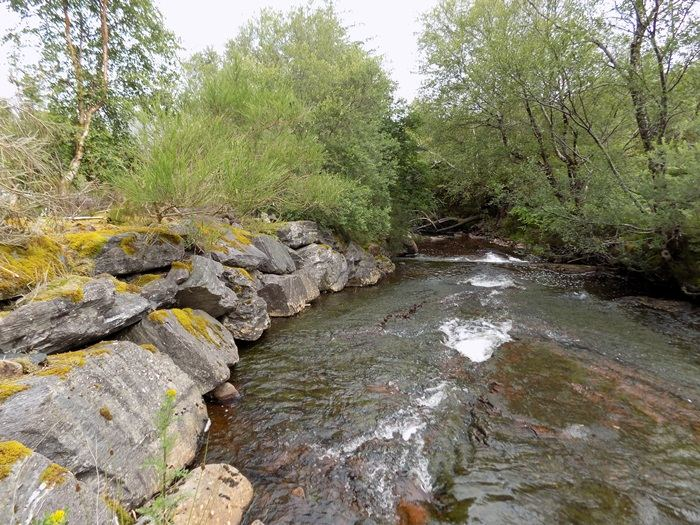
Off we go in the camper, heading through the ancient landscape of Torridon and along Loch Maree to the car park at Victoria Falls. Members of the party included me and my partner and our elderly collie who made a phenomenal effort through the tangled and thick vegetation which grows around the bed of the river above the falls – horsetails, heather, birch and rowan, long grasses, woodrush and the company of dragonflies.
First afternoon we clambered over deadwood, fallen trees and all with our beloved dog who has a partially paralysed back leg disappearing in the undergrowth. We searched the riverbed up from the falls until we reached a hydro station which seemed abandoned, with powerlines trailing in the river.
It is here that we abandoned project, and my partner took a walk further upstream to look, while I waited with our tired collie.
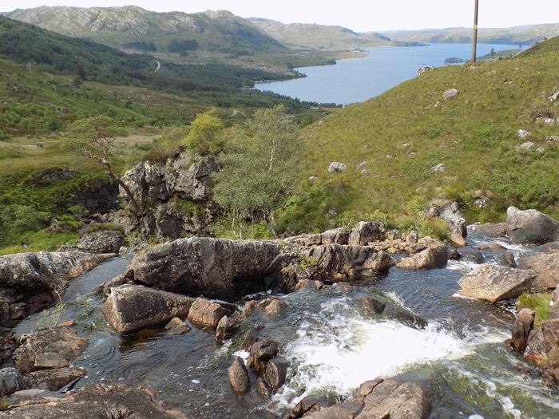
Nothing was particularly visible to us apart from the noticeable changes at the side of the bank where the hydro station stood – this was approx. 300 to 400 yards up from the falls. So we returned to the camper and had a refreshment and then I went back for another look further upstream past a deer fence and explored the river up there (photos incl.) This was high above the falls now and it was spectacular with the rocks and small falls plunging down, a female red deer disturbed by my presence ran uphill.
So we abandoned the project, went down to Loch Maree where we camped at Slattadale, and vowed to take another look in the morning. Midges were ferocious but the setting overlooking Slioch is spectacular so we hung out by the lochside as long as we could.
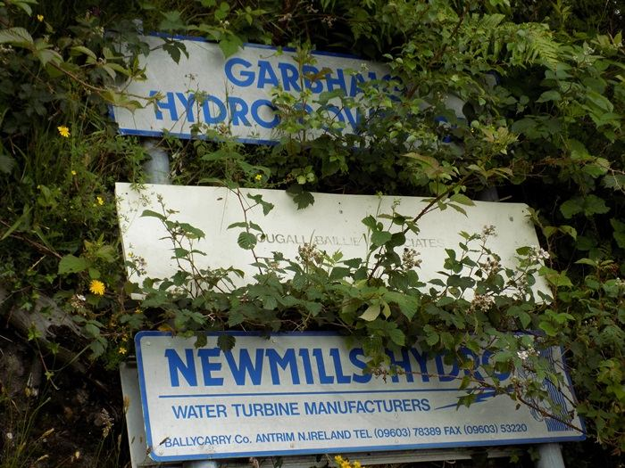
In the morning, we returned to the falls and our dog refused to go! So my partner went back by himself armed with the camera, and walked from the top of the falls up the river bed 300 to 400 yards and more. At this point is the disused hydro and approximately 70 yards of the west bank have been built out with large boulders covering the bedrock.
So our assumption is sadly that the oopart may be buried under the boulders on the west bank where the hydro site is. We researched a little about the hydro and found it was built late 80’s and abandoned for a new project with a greater MW further downstream below the falls. We can’t help but wonder if the building of this old hydro on possibly the very site of the oopart might have been intentional to conceal it. But this obviously is unprovable. It seemed to us more than a coincidence that the hydro now abandoned was deliberately placed.
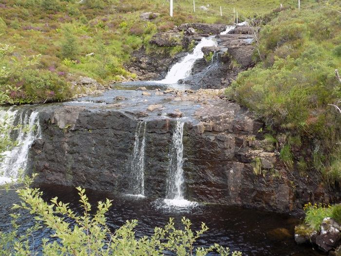
Thank you for your article as it encouraged us to have a wilderness adventure and a great time had, although disappointed not to be sharing the oopart pictures with you – and certainly sad for Scotland loosing a significant piece of prehistory yet again.
I enclose some pics for you
all the best
Anonymous Jane
RFQ
I would really appreciate a field trip to Victoria Falls to take pictures of the various objects and features. I would really like to see samples of the iron oxide, and to have a chemical analysis conducted of it. I would welcome a study of that entire area to see if there were any other elements of debris that could tell us much more than what has been handled down to us.
To me, a forensic study of this area might tell us some very interesting things.
But, then again, you can follow the statist explanation. It’s nothing. It’s just a natural formation, and the grooves are just geological fracture lines, or paths made by some kind of long extinct animal… that shit out iron oxide.
What ever makes your boat float. You define your reality. If you want to live a nice settled comfortable lie, go for it.
FAQ
Q: What is the Victoria Falls OOPART?
A: This is an impression in the sandstone rock. The rock was formed during the Cambrian, so the object that made the impression had to rest in and on the sand at that time. The pattern that was made in the sand is suggestive of only on thing; a torn up section of aircraft fuselage. Since this object (which made the impression) predates mankind, it is considered an Out of Place Artifact (OOPART).
Q: Why are the grooves at Victoria Falls considered an OOPART?
A: There simply isn’t a natural explanation for the manufacture of the kinds of impressions and features discovered in this object. Since it cannot be explained, more reasonable people don’t try to explain it. They name it as an OOPART and leave it at that.
Q: Are there other explanations for the Victoria Falls grooves?
A: Some explanations include [1] a fossil trail by an unknown extinct animal, [2] a hoax, [3] an unknown but natural geologic process, [4] carved structures made by man for purposes unknown, [5] natural weathering.
Q: Why was the moon relocated in orbit of the earth during the Cambrian?
A: Our solar system was chosen by the Progenitors as a crucible for intelligent evolution. Once the various life forms evolved, some became intelligent, and the Progenitors worked with other entities (not mentioned at this time) to help direct and guide the evolution of the emergent life. Today, the earth remains part of a cluster of “nursery” solar systems used to assist in the evolution of man. The biggest issue before man today is sentience. Our species can have only one sentience.
Today we have three sentience’s, and that mixture has resulted in all kinds of problems and turmoil over the years. In a way, you can simplify the sentience’s as this;
- Service-For-Others – Be good and kind. Help others. Be generous. Be saintly. This is “Heavenly” behavior and it results in a well adjusted soul within a stable “Heaven”.
- Service-for-Self – Do everything for your own personal benefit. You can do anything. There are no limits. If people and others suffer, there are no consequences. This can be considered evil or “Hellish” behavior. This behavior is associated with a different “kind” of “Heaven”. The way the quanta group themselves together for this kind of sentience is different, and evolutionary migration has a different vector to travel upon.
- Disrupted – You think that you are a Service-for-Others sentience, but your actions and motivations are Service-for-Self. This is a disrupted sentience, and it is the most dangerous as it adversely affects the soul composition and structure.
Q: What was the Cambrian Explosion?
A: The term the Cambrian Explosion refers to a short period of time when the moon tides permitted life (adapted to an aquatic biosphere) to migrate up onto land. As it did it began to evolve quickly.
Q: What are the Projenitors?
A: They are a non-human species that preceded mankind. They are very old, very wise and are tasked with the growth of mankind. Physically they are quite different from humans. They are invertebrates. They are biologically similar to insects, but you wouldn’t know that from meeting them. They are often considered to be angels. Yes, in the Biblical sense; “angels”.
“Angels therefore are not vertebrates or derived from vertebrate stock. The implications of this are profound. The only winged invertebrates are in the Class Insecta insects [Insecta].” - A theologian discusses the etymological implications of biblical angels.